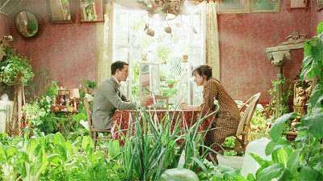

La mémoire est similaire à une sorte de pharmacie ou de laboratoire. 기억은 일종의 약국이나 실험실과 유사하다.

마담 프루스트의 비밀정원 中
주연: 기욤 구익스, 안느 르 나이
"당신의 기억, 행복한가요?" 어릴 적에 부모를 여읜 폴은 말을 잃은 채 쌍둥이 이모와 함께 산다. 이모들은 폴을 세계적인 피아니스트로 만들고 싶어하지만 서른셋의 폴은 이모들의 댄스교습소에서 피아노를 연주하는 것이 전부이다. 그러던 어느 날 우연히 이웃인 마담 프루스트의 집을 방문한 폴은 마담이 키우는 식물로 우려낸 차와 마들렌을 먹고 자신의 심연 속에 잠들어있던 상처와 추억을 떠올리게 된다.